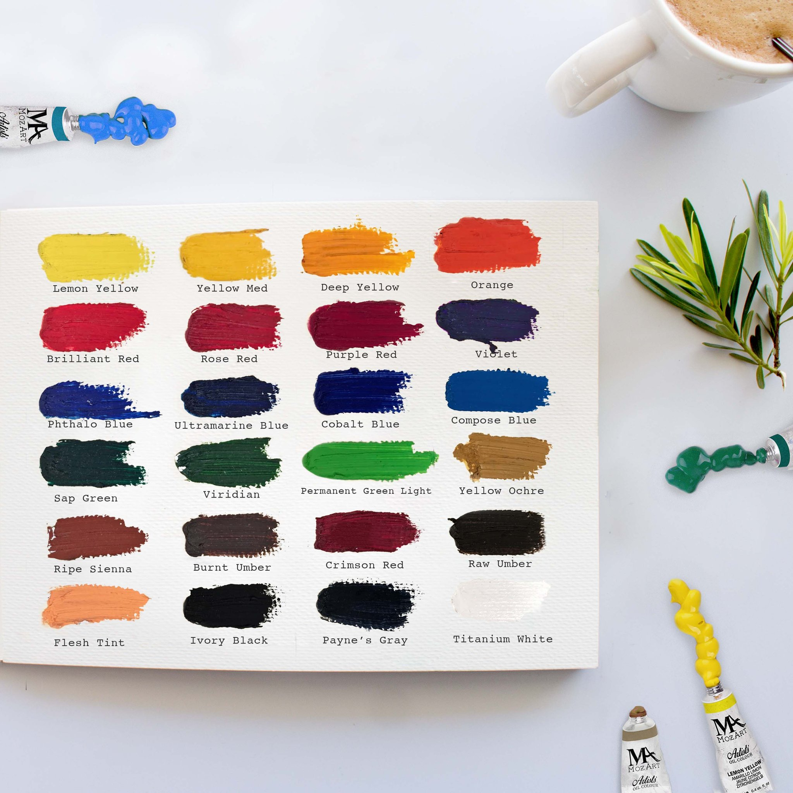

oil paint is a type of slow-drying paint that consists of particles of pigment suspended in a drying oil, commonly linseed oil. the viscosity of the paint may be modified by the addition of a solvent such as turpentine or white spirit, and varnish may be added to increase the glossiness of the dried oil paint film.
oil paints blend well with each other, making subtle variations of colour possible as well as more easily creating details of light and shadow. they can also be diluted with turpentine or other thinning agents. a heavily diluted layer dries relatively quickly, being tack-free in a few days. thicker layers, containing more oil, take longer. Oil paint continues to dry, getting harder with age over many decades. pigments and extenders will also affect the rate of drying, so different colors may dry at different speeds.